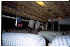
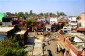
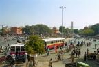

|
Parler de l'Inde comme d'un simple pays serait lui faire perdre sa dimension (au propre et au figure). Il est preferable de parler de sous-continent indien, donc d'un territoire immense, avec toutes les disparites que cela peut comporter. De la chaine himalayenne de Darjeeling aux cocotiers de Goa, des ghats de Varanasi aux eglises catholiques de Fort Cochin, des ghettos de Bombay aux plages de Trivandrum, ou des ruelles passionnantes de Calcutta a la majestuosite du Taj Mahal, il y a 10 000 lieues. Et c'est ca qui faconne ce pays incroyable.
Pays fascinant s'il en est, l'Inde offre tout de meme des constantes qui sont autant de risques d'atteinte a notre equilibre nerveux si on ne reussit pas a rester zen (pour cela, fermer les ecoutilles que sont les 5 sens s'avere parfois necessaire). Le bruit est incroyable et incessant, les odeurs fantastiques (tant qu'on n'est pas tout malade!), l'agitation extreme, et pourtant, l'apathie incroyable aussi. La curiosite naturelle des indiens est fort sympathique (et explique probablement la rapidite fulgurante a laquelle les nouvelles sont diffusees via le bouche a oreille), leurs mimiques et gestes surprenants, leur parler vehement et leur gentillesse parfois brutale mais bien reelle.
Pays du systeme D, tous les metiers du monde y existent ou y sont inventes, jusqu'aux "nettoyeurs d'oreilles" armes de coton tiges. Chacun s'invente un metier, se cree une echoppe de deux metres carres ou se transforme en horripilant rickshaw rabatteur pour vivre. Tout cela en fait un pays extremement vivant. On est loin de nos villes dortoirs si tristounettes.
En bref: un flot continuel de gens, de rickhaws, de mendiants, des bruits, des odeurs, des vaches, des religions, des saddhus, des epices, du tchae et beaucoup de riz, c'est un peu ca, l'Inde. Du moins c'est ce qu'on voit parce que ce pays fait un peu penser a un iceberg, reste donc a comprendre 90% de cette culture faconnee par l'hindouisme.
Voir le trajet en détail (étapes, durée, coût)
| Arrivée à Delhi |
|

|
Dimanche 18 février 2001 -
Trop cool cet avion. Meme si Marion pleure toutes les larmes de son corps parce
qu'on n'a pas eu de fenêtre.
Lire la suite ...
|
| Agra et le Taj Mahal |
|

|
Mardi 20 Février -
Hier soir, on a mangé du riz dans un resto dans le Old Delhi. Les gens sont
pauvres en grande majorité dans ce quartier, mais cela ne choque.
Lire la suite ...
|
| Premier jour à Jaïpur |
|

|
Mercredi 21 fevrier -
Après 5 heures de bus plutôt tranquille, on est à Jaïpur, 256 kms au Sud Ouest
de Delhi. Sur la route, le paysage passe de verdoyant à sec, et les dromadaires
deviennent plus fréquents que les chevaux comme bêtes de trait.
Lire la suite ...
|
| Pushkar, au pays des baba cools |

|
Samedi 24 février -
Ils sont graves ces indiens! Sur la route en tous cas, ils sont carrément malades.
Lire la suite ...
|
| Udaïpur |

|
Lundi 26 février -
Ca y est, Lionel a un pantalon pas troué aux fesses! Un super pantalon de coton
si large qu'on pourrait y tenir à deux (70 roupies)!
Lire la suite ...
|
| En route pour Goa |
|
|
Mercredi 28 février, départ vers Bombay -
Ce matin, on visite le City Palace, la maison du maharadjah transformée en
musée pour la plus grande partie. Même si les peintures exposées ne me bouleversent
pas, elle a raison Marion, ça fait partie du pays et louper cela signifierait
ne pas connaître son histoire.
Lire la suite ...
|
| Vacances à Goa |
|
|
Samedi 3 mars -
On a une drôle de sensation en débarquant à Goa. C'est plus propre qu'ailleurs,
moins bruyant, moins agressif, plus vert, plus souriant, les femmes ont des
tenues et attitudes plus cools: cheveux courts, jupes sous le genoux au lieu
du sari, etc.
Lire la suite ...
|
| Un bien long trajet en train |
|
|
Jeudi 8 mars -
A regrets, et après un dernier bain matinal, nous quittons la plage de rêve
de Palolem et Robinson Crusoé pour Cochin. Nous avons coupé le trajet: Goa-Magalore
et Mangalore-Cochin le lendemain.
Lire la suite ...
|
| Cochin |
|
|
Samedi 10 mars -
Ce qu'il y a de plus difficile à supporter en Inde, c'est le bruit permanent.
et c'est surtout du aux klaxons variés : camions, bus, rickshaws, voitures,
motos, scooters, vélos, vendeurs de glaces...
Lire la suite ...
|
| Allepey - Quillon, Les backwaters |
|
|
Mardi 13 mars -
Une journée chaude mais calme. Un peu moins de 8 heures pour effectuer le trajet
Alleppey-Quillon en bateau par les backwaters.
Lire la suite ...
|
| Varkala |
|
|
Mercredi 14 mars -
Nous voici à Varkala, village perché sur une falaise surplombant la mer, sur
la Côte de Malabar. Il fait toujours très très chaud jour et nuit.
Lire la suite ...
|
| Kovalam |
|
|
Jeudi 15 mars -
On continue notre tournee des plages du Kerala. Cette fois-ci, nous sommes
a Kovalam, a une vingtaine de kilometres au sud de Trivandrum.
Lire la suite ...
|
| Kodaikanal... un peu de montagne |
|
|
Dimanche 18 mars -
Ce soir, ca fait tout drole: nous sommes habitues aux grosses chaleurs du sud
et nous voici, pauvres malheureux en short et T-shirt a 2200 metres d'altitude
a la nuit tombante. Et bien on se gele!
Lire la suite ...
|
| Madurai |
|
|
Mercredi 21 mars -
Decidement, je suis amoureux des bus indiens. Pour quitter notre douce montagne
et notre petit resto sympa a Kodail, on a pris le bus.
Lire la suite ...
|
| Pondichery ... chery |
|
|
Vendredi 23 mars -
Pondichery n'est pas une ville ou il y a des tonnes de monuments a voir. C'est
simplement une ville de taille moyenne, ou il fait bon se ballader.
Lire la suite ...
|
| Mahabalipuram |

|
Dimanche 25 mars -
Mahabalipuram, qu'on peut aussi ecrire Mamallapuram, c'est un peu au nord de
Pondicherry. Des que nous y sommes arrives, on s'y est sentis bien.
Lire la suite ...
|
| Tirukalikundram |
|
|
Mardi 27 mars -
Petit bourg ou gros village, Tirukalikundram se trouve a une quinzaie de km
de Mahabalipuram. Il y a tres peu de touristes et 2 temples dont un identique
par la forme a celui de Madurai (4 grandes tours) et l'autre perche en haut
d'une colline.
Lire la suite ...
|
| Le train pour Puri |
|
|
Jeudi 29 mars -
Depart pour Madras. Il y fait un peu plus frais qu'a Mamallapuram et les gens
sont particulieremenet accueillants.
Lire la suite ...
|
| Calcutta |
|
|
Lundi 2 avril -
Ce n'est pas la premiere fois que l'on ressent cela: aujourd'hui encore, nous
sommes tirailles par deux envies contradictoires. D'une part on aimerait bien
s'arreter un peu plus longtemps ici a Puri.
Lire la suite ...
|
| Varanasi |
|
|
Samedi 7 avril -
Le train est notre moyen de transport préféré. Mais cette fois-ci, quelle
horreur!
Lire la suite ...
|
La suite du voyage : Le Népal
|